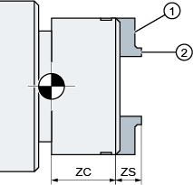
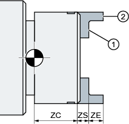
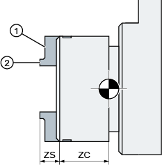
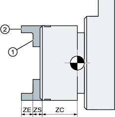
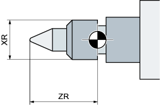
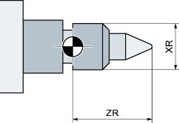

In Fenster "Spindelfutterdaten" hinterlegen Sie die Futtermaße der Spindeln an Ihrer Maschine.
Manuelles Werkzeug messen
Möchten Sie beim manuellen Messen der Werkzeuge das Futter der Haupt- oder Gegenspindel als Bezugspunkt verwenden, geben Sie das Futtermaß ZC an.
Hauptspindel
|  Bemaßung Hauptspindel Backenart 1 |  Bemaßung Hauptspindel Backenart 2 |
① Anschlagkante ② Vorderkante | |
Gegenspindel
Sie können entweder die Vorder- oder die Anschlagkante der Gegenspindel vermessen. Die Vorder- bzw. Anschlagkante gilt dann automatisch als Bezugspunkt beim Verfahren der Gegenspindel. Dies ist vor allem beim Greifen des Werkstücks mit der Gegenspindel wichtig.
|  Bemaßung Gegenspindel Backenart 1 |  Bemaßung Gegenspindel Backenart 2 |
① Anschlagkante ② Vorderkante | |
Reitstock
|  Bemaßung Reitstock Hauptspindel |  Bemaßung Reitstock Gegenspindel |